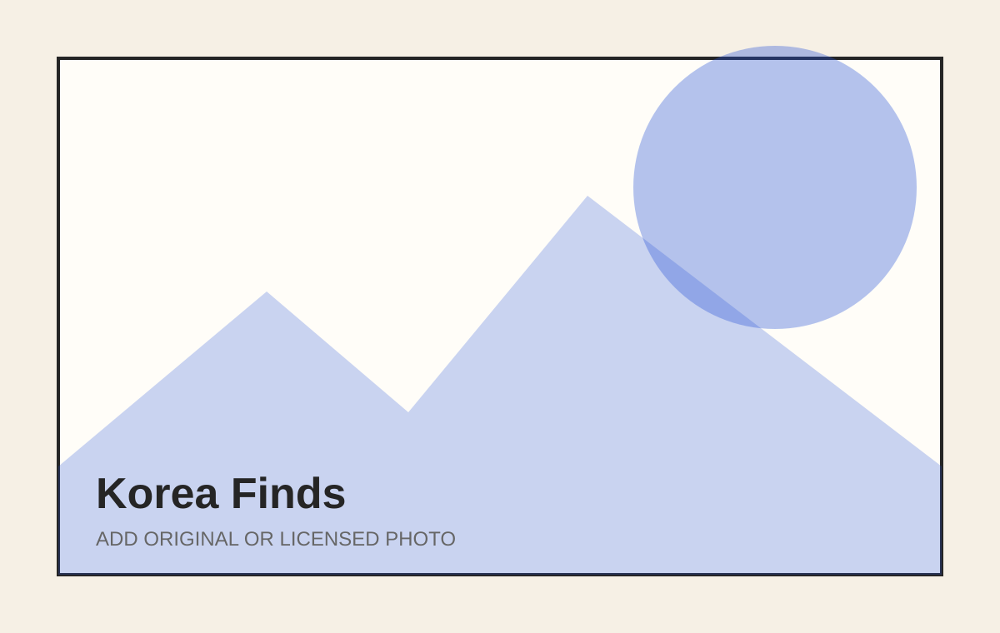

Korea Finds
This Tiny Daiso Gadget Makes Korean-Style Steamed Eggs in Minutes
A careful look at a microwave shortcut for gyeran-jjim.
Read story →What Korea is really like right now.
Editorial product notes focused on usefulness, design, availability, and Korean context.

A careful look at a microwave shortcut for gyeran-jjim.
Read featured storyA careful look at a microwave shortcut for gyeran-jjim.
Read story →Limited drops, character licensing, and the weekend hunt.
Read story →Prepared banchan, smaller portions, and practical shopping.
Read story →An everyday meal structure, not a novelty tasting flight.
Read story →How to separate social buzz from routine use.
Read story →Why temporary retail feels closer to an exhibition.
Read story →